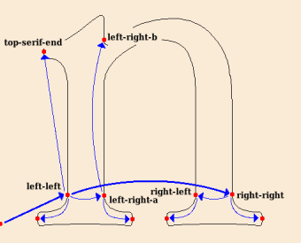

Instructions that Move Points
The most important Xgridfit instruction is <move>. This may move a point to an absolute position on the raster grid, to the nearest gridline (or rounded position), or to a position relative to another point. <move> does the work of the TrueType MIRP, MDRP, MSIRP, MIAP, MDAP and SCFS instructions. (Xgridfit provides equivalents of most of these primitive instructions, but their use is not recommended except in special circumstances.)
Other commonly used instructions are <shift>, <align> and <interpolate>. These are generally subordinate to <move>: that is, after <move> has moved a point, these instructions are used to shift other points along with it (<shift>), align other points with it (<align>), or reposition some points so that they are properly located between it and another moved point (<interpolate>). Another instruction, <delta>, which moves a point an absolute distance at a specific size, is discussed in its own section.
Some of the following instructions should be avoided in favor of higher level instructions but are here in case they're needed, or in case the programmer wants to produce more efficient code. Such instructions have cryptic names (e.g. <mirp>) that echo the mnemonics for TrueType instructions. Those that are suitable for frequent use have clearer, fuller names (e.g. <shift>).
<move>
Moves a point and, optionally, aligns other points with it or moves other points in relation to it.
The only required item is a point to move. Xgridfit moves this point differently depending on the presence or absence of a reference point (explicit or, in the case of a <move> nested within a <move>, implicit) and the "distance" or "pixel-distance" attribute:
- no reference point or distance attribute
-
The point is moved to a position on the grid determined by
the current position of the point and the round state: for
example, if the round state is "to-grid," the point is moved
to the nearest grid line. If rounding is off, the point is
not moved, but "touched" as if it had been moved. In this
example, the point "bottom" is moved to the nearest position
halfway between two grid lines:
<move round="to-half-grid"> <point num="bottom"/> </move>
- reference point but no distance attribute
-
The point is moved so that its original distance from the
reference point is maintained. The distance is rounded in
accordance with the current round state. Here the original
distance between "bottom" and "top" is rounded (presumably
"to-grid"), and "top" is moved until it is that distance from
"bottom":
<move> <reference> <point num="bottom"/> </reference> <point num="top"/> </move> - reference point and distance attribute
-
"Distance" is a value from a <control-value> element;
the point is positioned this distance from the reference
point. The distance is rounded in accordance with the current
round state. Here the <control-value> "lc-height" is
rounded and "top" is moved until it is that distance from
"bottom":
<move distance="lc-height"> <reference> <point num="bottom"/> </reference> <point num="top"/> </move> - distance attribute but no reference point
-
"Distance" is a value from a <control-value>
element; the point is positioned this distance from the grid
origin. The distance is rounded in accordance with the
current round state. Here the <control-value>
"lc-height" is rounded and "top" is moved until it is that
distance from the grid origin. If the freedom and projection
vectors are set to the y axis, the distance is
measured from the baseline:
<move distance="lc-height"> <point num="top"/> </move>
- reference point and pixel-distance attribute
-
"Pixel-distance" is a distance in pixels (e.g. "2p" or "2.0"
or "round(control-value(lc-height) * 0.8)"). The point is
positioned this distance from the reference point:
<move pixel-distance="2p"> <reference> <point num="left"/> </reference> <point num="right"/> </move> - pixel-distance attribute but no reference point
-
The point is positioned the specified distance from the grid
origin:
<move pixel-distance="2p"> <point num="right"/> </move>
A top-level <move>--one that is not a child of another <move> element--always leaves the RP0 reference pointer set to the point just moved. When another <move> follows, with a reference point that matches the point just moved, Xgridfit optimizes the output, "chaining" the instructions generated by <move>. Here is a series of chained <move> elements:
<move distance="std-stem-left-side" min-distance="no">
<reference>
<point num="left-sidebearing"/>
</reference>
<point num="stem-left"/>
</move>
<move distance="lc-vert-stem">
<reference>
<point num="stem-left"/>
</reference>
<point num="stem-right-a"/>
</move>
<move min-distance="no">
<reference>
<point num="stem-right-a"/>
</reference>
<point num="stem-right-b"/>
</move>
A number of subordinate moves may be packaged inside a <move> element. This is done by including <interpolate>, <align>, <shift>, <delta> and other <move> instructions after the <point> element. The parent <move> element supplies the reference point or points for those child elements that take reference points (<delta> does not); in such child elements the <reference> element should be omitted, the reference point(s) being implicit. Here are further notes on the behavior of nested elements:
- The points and ranges in an <align> element are aligned with the point moved by the <move> instruction.
- You may include <interpolate> instructions if the <move> instruction contains either an explicit or an implicit reference point. The points and ranges in the <interpolate> instructions are interpolated between the reference point and the moved point.
- The points, ranges and contours in a <shift> element are shifted relative to the point moved by the <move> instruction.
- The point in a <move> element is moved relative to the point moved by the parent <move> instruction. Unlike a top-level <move>, a nested <move> does not leave RP0 set to its <point>; rather, RP0 always continues to point to the <point> in the parent <move>.
- You may include <delta> elements both before and after nested <align>, <interpolate>, <shift> and <move> elements. Deltas positioned before those elements are executed immediately after the <point> belonging to the parent <move> is moved, but before other nested elements are executed. Normally these deltas are used to make fine adjustments to the position of the point just moved; if you omit the <point> element in a <delta-set> here, the <point> belonging to the parent <move> is assumed. The <delta> elements that come after other nested elements are executed after all those elements have been executed: use these to make fine adjustments in the positions of the points moved by those other instructions.
You should use this nesting or packaging feature to build programming structures around the visible structures of the glyph. The payoffs for doing so are more compact and legible program code and more compact and efficient output. As an example, here are the horizontal instructions for a letter n:
<move distance="fhijklmnt-left-side">
<reference>
<point num="left-sidebearing"/>
</reference>
<point num="left-left"/>
<move distance="top-serif-x-width">
<point num="top-serif-end"/>
</move>
<move distance="lc-serif-width">
<point num="left-serif-left-end"/>
</move>
<move distance="lc-vert-stroke">
<point num="left-right-a"/>
<align>
<point num="left-right-b"/>
</align>
<move distance="lc-serif-width">
<point num="left-serif-right-end"/>
</move>
</move>
</move>
<move distance="hnu-width">
<reference>
<point num="left-left"/>
</reference>
<point num="right-right"/>
<delta>
<delta-set size="4" distance="-8"/>
</delta>
<move distance="lc-serif-width">
<point num="right-serif-right-end"/>
</move>
<move distance="lc-vert-stroke">
<point num="right-left"/>
<move distance="lc-serif-width">
<point num="right-serif-left-end"/>
</move>
</move>
</move>
The first <move> block relates to the left "leg" of the n. First the point left-left is positioned relative to the left-sidebearing point; then the points that define the left ends of the serifs are positioned relative to left-left. Then left-right-a is positioned relative to left-left, left-right-b is aligned with left-right-a, and the right end of the left serif is positioned relative to left-right-a. The second <move> block works in a similar way, each element nested inside a <move> taking that element's <point> as a reference point. Note that the <delta> in this element moves the point right-right.
The figure above illustrates this code graphically, the thick lines showing the relationship among the reference points and moved points of the top-level <move> elements, and the thin lines showing the subordinate moves.
Remember that <move> elements are not "chained" inside other <move> elements as top-level <move> elements are. Rather, after a nested <move> RP0 always points to the <point> moved by the parent <move>. One might say that chaining inside the <move> is vertical, from parent to child, while otherwise is it horizontal, from sibling to sibling.
Elements nested inside a <move> must come in the following order:
- <delta>
- <align>, <interpolate>, <shift> (in any order),
- <move>
- <delta>
You may include more than one of each of these nested elements. Note that the order of <align>, <interpolate> and <shift> is not significant: Xgridfit sets the order in which these elements are executed. Normally this should not be a problem, as it would be very odd if the content of these elements were to overlap.
The <compile-if> element is not permitted in a <move>, but nested elements may be compiled conditionally with the compile-if attribute. For example, one set of deltas can be compiled if a font is bold and another if it is not bold (a "bold" constant, either true (1) or false (0) being defined in the top level of your program):
<move>
<point num="p"/>
<delta compile-if="bold"/>
<delta-set size="5" distance="2"/>
</delta>
<delta compile-if="not(bold)"/>
<delta-set size="3" distance="-1"/>
</delta>
</delta>
˙
Bypassing the Control Value Table by using the pixel-distance attribute is usually unnecessary. Yet this attribute may occasionally be useful. For example, here is a function that guarantees at least one pixel of space between a character and the diacritic above it:
<function id="ensure-diacritic-gap">
<param name="char-top"/>
<param name="diacritic-bottom"/>
<param name="diacritic-contour"/>
<variable id="d"/>
<with-vectors axis="y">
<measure-distance result-to="d">
<point num="char-top"/>
<point num="diacritic-bottom"/>
</measure-distance>
<if test="d < 1p">
<move pixel-distance="1p" round="no">
<reference>
<point num="char-top">
</reference>
<point num="diacritic-bottom"/>
<shift>
<contour num="diacritic-contour"/>
</shift>
</move>
</if>
</with-vectors>
</function>
Attributes
- distance
- A value from a <control-value> element. If a distance is specified, the target point is positioned that distance either from the reference point or from the grid origin. If a distance is not specified, the distance from the original outline is used. In either case, the distance is measured along the projection vector.
- pixel-distance
- A distance in pixels. If a pixel-distance is specified, the target point is positioned that distance either from the reference point or from the grid origin. The distance and pixel-distance attributes are not compatible. If a distance attribute is present, the pixel-distance attribute is not consulted.
- round
- Whether and how to round the distance or pixel-distance. The default value is yes, which means to round it according to the current setting (to the grid, if you haven't changed it). If you specify no, no rounding will be done. To use one of the standard round states, use to-grid, to-half-grid, to-double-grid, down-to-grid or up-to-grid. To use a custom round state, use its name. Finally, any number (constant, variable) is passed to SROUND for the TrueType engine to interpret. Setting the round state with this attribute has no effect except in this instruction: the round state returns to its former value after the instruction is executed. If several <move> instructions use the same round state, it is more efficient to enclose them in a <with-round-state> element than to include a round attribute with each one. That is also true if the round value is to be no: in that case use <with-round-state round="no"> and omit the round attribute for the <move> instructions.
- cut-in
- Whether to use the Control Value cut-in; or a cut-in value to use. Legal values are yes, no or any number; the default value is yes. If the value of this attribute is no, the value of the round attribute must also be no. (This is a peculiarity of the TrueType instruction set and has nothing to do with Xgridfit.) This attribute has an effect only when the distance attribute is present.
- min-distance
- Whether to maintain a minimum distance between the reference point and the target point; or the minimum distance to use: legal values are yes (the default), no, or any number. This attribute has an effect only when there is a reference point.
- color
- Distance type: black, white or gray (the default). This applies only when there is a reference point.
- compile-if
- The <move> instruction and all its contents are compiled only if the expression in the compile-if attribute evaluates as true (non-zero). The instruction is also compiled if this attribute is omitted.
<diagonal-stem>
Given two lines (making up a diagonal stem), makes the second line parallel to the first, subject to the operation of the Control Value cut-in. If one <align> element is present, the points it contains are aligned with the second line; if there are two, the first set of points is aligned with the first line and the second set with the second line. You may, and often should, set a new minimum distance value with the min-amount attribute. At the end of this instruction the minimum distance will be reset to its former value.
Usually it doesn't make a lot of sense to round the distance when calling this instruction; and yet the default value of round is yes for compatibility with other, similar instructions. You'll probably want to set the round attribute to no; but if you have several <diagonal-stem> instructions together, enclose them in a <with-round-state round="no"> element to turn off rounding beforehand and on again afterwards. In this case, do not include the round attribute with the <diagonal-stem> elements.
By default this instruction does not set the Freedom Vector, since the best setting of that vector varies with circumstances. If you want the Freedom Vector to be the same as the Projection Vector, set freedom-vector="yes".
This instruction is not suitable for use inside a function (though you may do so if the <line> elements contain points rather than ref attributes). Also, I'm not sure whether it will work if the various points are in different zones. It may, but I don't guarantee it.
Example:
<diagonal-stem min-distance="yes" distance="cap-thin-diag" round="no">
<line ref="left-left-line"/>
<line ref="left-right-line"/>
<align>
<point num="left-right-b"/>
<point num="left-right-c"/>
</align>
</diagonal-stem>
Attributes
- distance
- A value from a <control-value> element: this controls the width of the diagonal stem.
- round
- Whether and how to round the distance the point is to be moved. The default value is yes, which means to round it according to the current setting (to the grid, if you haven't changed it). If you specify no, no rounding will be done. The other values specify one of the standard kinds of rounding or a custom round-state. Setting the round state with this attribute has no effect except in this instruction: the round state returns to its former value after the instruction is executed. If several <diagonal-stem> instructions use the same round state, it is more efficient to call <set-round-state> before and after that group than to include a round attribute with each one. That is also true if the round value is to be no: in that case call <set-round-state round-state="no"/> before and omit the round attribute for the <diagonal-stem> instructions.
- cut-in
- Whether to use the Control Value cut-in. Legal values are yes and no; the default is yes. If the value of this attribute is no, the value of the round attribute must also be no. (This is a peculiarity of the TrueType instruction set and has nothing to do with Xgridfit.) This attribute has an effect only when a distance is specified.
- min-distance
- Whether to maintain a minimum distance between the points in the first line and the points in the second: legal values are yes (the default) and no.
- min-amount
- The value of the minimum-distance setting in pixels. The default value of this setting (1p) is more often than not appropriate for vertical and horizontal stems, but usually needs to be changed for diagonal stems to look their best. This attribute applies only to the present instruction. The minimum-distance setting resumes its former value after this instruction.
- color
- Distance type: black, white or gray (the default).
- freedom-vector
- Set this to yes if you want the Freedom Vector to be the same as the Projection Vector. The default is no.
- save-vectors
- If yes, both the Projection Vector and the Freedom Vector are guaranteed to be the same after this intruction as they were before. The default is no.
<interpolate>
To "interpolate" a point is to move it so that its position relative to two reference points is what it was in the original outline. If the distance between the two reference points is not what it was in the original outline, the point is positioned so that its relationship to the reference points is proportionally correct.
The <interpolate> element must contain at least one point to interpolate. It may contain any number of <point>s and <range>s. Like most other elements that move points, it may contain a <reference> element; but this element must contain two <point>s, not just one.
This instruction may be nested inside a <move> element containing a reference point, or inside a <move> nested in another <move>, and so having an implicit reference point. In an <interpolate> element so placed reference points are needed; the points it contains are automatically interpolated between the <move> element's explicit or implicit reference point and its moved point.
Example:
<interpolate>
<reference>
<point num="top"/>
<point num="bottom"/>
</reference>
<point num="bar-top-left"/>
</interpolate>
Attributes
- compile-if
- The <interpolate> instruction is compiled only if the expression in the compile-if attribute evaluates as true (non-zero). The instruction is also compiled if this attribute is omitted.
- round
- If this attribute is included with any value other than "no," all points referenced by <point> elements will be aligned to the grid after being interpolated. Points referenced by <range> and <set> elements are unaffected. The possible values of round are the same as those for <set-round-state> and <with-round-state>. Note that the value "yes" will use the current round state; so it is usually not necessary to specify a round state here.
<interpolate-untouched-points>
Interpolates all points that have not been moved or "touched" by instructions so that they are positioned correctly relative to points that have been moved. Most of the time you will want to place this instruction at the end of the program for each glyph.
Attribute
- axis
- Interpolation always takes place along the x or the y axis. If you omit this attribute, interpolation takes place along both axes.
<untouch>
A point that has been moved is "touched." This untouches it so that it will be affected by the <interpolate-untouched-points> instruction.
<align>
Moves one or more points along the freedom vector until aligned with a reference point. Points are "aligned" when their distance from each other, measured along the projection vector, is zero. When the projection vector is "x," aligned points end up stacked vertically; when it is "y" they end up in a horizontal line. When the projection vector is set to a line, the aligned points end up arrayed along an imaginary line orthogonal to the projection vector.
The <align> element must contain at least one point to align. It may contain any number of <point>s and <range>s. An optional <reference> element contains the point to align with. If the reference point is omitted, the current setting of RP0 is used.
The <align> element may be nested in a <move> element, in which case it is not necessary to include a <reference>: the <point> of the parent <move> is implicitly the reference point.
Example:
<align>
<reference>
<point num="left-left-b"/>
</reference>
<range ref="knob-range"/>
</align>
Attribute
- compile-if
- The <align> instruction is compiled only if the expression in the compile-if attribute evaluates as true (non-zero). The instruction is also compiled if this attribute is omitted.
<align-midway>
Must contain two <point> elements. Moves these along the freedom vector until they are aligned midway between their original positions. Measurement is along the projection vector.
<shift>
Shifts one or more points, ranges, contours and zones by the distance between the current position of the reference point and its original position. Note that this does not guarantee that the shifted elements will maintain their original distance from the reference point (use <move> or <mdrp> for that).
The <shift> element may contain points, ranges, contours and zones in any combination and order. The following is perfectly correct:
<shift>
<reference>
<point num="ref-pt"/>
</reference>
<point num="move-pt-1"/>
<range ref="move-rg-1"/>
<contour num="0"/>
<point num="move-pt-2"/>
<range ref="move-rg-2"/>
</shift>
But note that all the points are shifted first, then all the ranges, then all the contours, and finally any zones. The order of child elements in the <shift> element is not significant; but this is less confusing:
<shift>
<reference>
<point num="ref-pt"/>
</reference>
<point num="move-pt-1"/>
<point num="move-pt-2"/>
<range ref="move-rg-1"/>
<range ref="move-rg-2"/>
<contour num="0"/>
</shift>
The <shift> element may be nested in a <move> element, in which case it is not necessary to include a <reference>: the <point> of the parent <move> is implicitly the reference point.
Attributes
- reference-ptr
- Addresses a technical detail: the SHP, SHC and SHZ instructions can use either RP1 or RP2, and this attribute determines which. Chiefly useful if the RP you want to use has already been set; otherwise the default (RP1) should do fine. Xgridfit automatically sets this correctly when a <shift> instruction is nested inside a <move> instruction.
- compile-if
- The <align> instruction is compiled only if the expression in the compile-if attribute evaluates as true (non-zero). The instruction is also compiled if this attribute is omitted.
- round
- Causes any points referenced by <point> elements to be moved to rounded positions after the shift. <set> and <range> elements are not affected. Works like the round attribute on the <interpolate> element.
<shift-absolute>
Moves one or more points along the freedom vector by a fixed amount (expressed in pixels); it does not use the projection vector. The <shift-absolute> element must contain at least one point to shift: that is, a <range> or a <point> element. It may contain any number of <point>s and <range>s.
Attribute
- pixel-distance
- The distance (in pixels) to shift the points.
<move-point-to-intersection>
Moves a point to the intersection of two lines. Each of the lines must be wholly in a single zone, so if specifying the zone use the zone attribute of the <line> elements rather than the zone attributes of the <point> elements that make up the lines. Example:
<move-point-to-intersection>
<point num="pt"/>
<line>
<point num="line-a1"/>
<point num="line-a2"/>
</line>
<line>
<point num="line-b1"/>
<point num="line-b2"/>
</line>
</move-point-to-intersection>
<set-coordinate>
Moves a <point> to a coordinate determined by the freedom and projection vectors. On the rare occasions when you need a command like this one, it is probably better to use <move> with the pixel-distance attribute.
Attribute
- coordinate
- The new coordinate in pixels.
<flip-off>
<flip-on>
"Flips" a range of points so that they all become either on-line points or off-line points. The <flip-off> and <flip-on> elements must contain a single <range> element. The range operated upon always runs from the lowest point to the highest. The <range> element may contain a zone attribute, in which case the operation takes place in the specified zone.
<toggle-points>
Any of the points that are on-line become off-line, and any that are off-line become on-line. The <toggle-points> element must contain at least one point to toggle: that is, a <range> or a <point> element. It may contain any number of <point>s and <range>s.
<mirp>
Corresponds to the MIRP instruction, but attempts, insofar as it is practical, to separate rounding and the cvt cut-in. You can specify round="no" and cut-in="yes" or both no or both yes, but not round="yes" and cut-in="no". That produces an error-message.
This will take care of setting RP0 beforehand if a reference point is included.
Attributes
- distance
- distance (from a <control-value> element) relative to the reference point (or to RP0 if that was set by a previous instruction).
- round
- whether/how to round the distance. If yes is specified, the round bit is set and nothing more is done: so the current round state is used. If to-grid, to-half-grid or to to-double-grid, the round state is set as specified, the instruction is executed, and then the earlier round state is restored. The default is yes.
- cut-in
- whether to use the cvt cut-in. If rounding is used, this will always be yes, even if you set it to no.
- min-distance
- whether to observe the current minimum distance (1p unless you set it differently using set-minimum-distance). The default is yes.
- set-rp0
- whether to set reference point 0 to point at the moved point after the instruction is executed. The default value is no.
- color
- Or distance-type, or compensation for engine characteristics. Whatever. It's got to be gray, black or white, and here gray is the default.
<mdrp>
Corresponds to the MDRP instruction.
Similar to <mirp>. This will also take care of setting RP0 beforehand if a reference point is supplied.
Attributes
- round
- Whether/how to round the distance from the reference point.
- min-distance
- Whether to maintain a minimum distance from the reference point.
- set-rp0
- Whether to set RP0 to the moved point after the move.
- color
- Or distance-type, or compensation for engine characteristics. Whatever. It's got to be gray, black or white, and here gray is the default.
<miap>
Corresponds to the MIAP instruction.
As with mirp, it will try to separate rounding and the cvt cut-in.
Must contain one point element.
Attributes
- distance
- Distance relative to grid origin
- round
- Whether/how to round the distance
- cut-in
- Whether to use the cvt cut-in
<mdap>
Corresponds to the MDAP instruction
Will round a point to the grid if the round attribute is not no; otherwise will just touch the point (i.e. mark it as moved).
Attributes
- round
- Whether and how to round